試作の構図を、本体に。
相棒・問題・キーを近づけ、3列テンキーと大きな数字へ。音ボタン1回で伴奏も始まります。以下は実アプリの画面です。
ユーザーが再提示した基準
通常 → 3連続 → 5連続
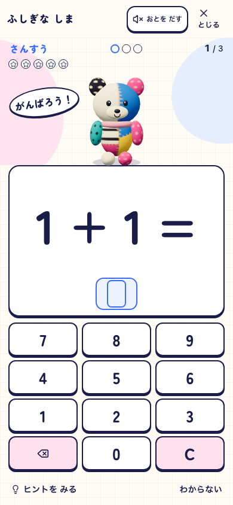
待つ・入力する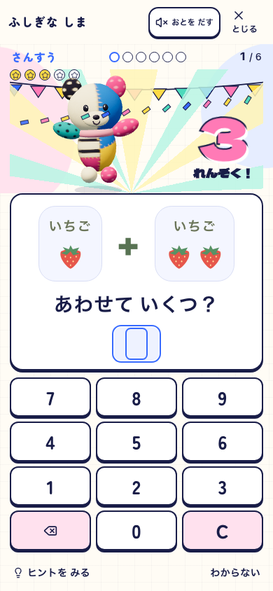
3連続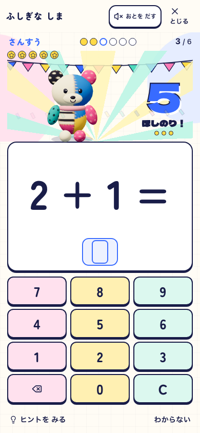
5連続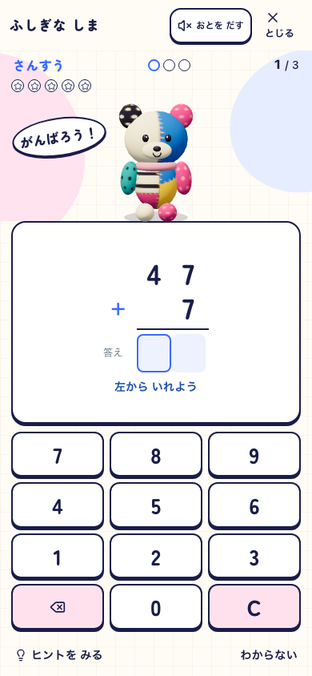
筆算島から学び、集める
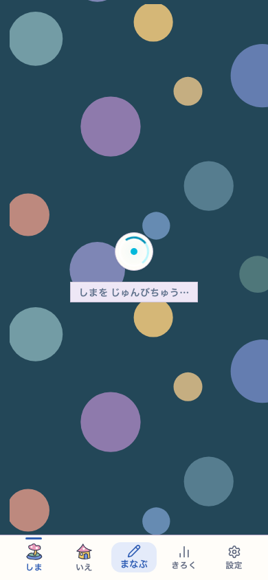
同じ島から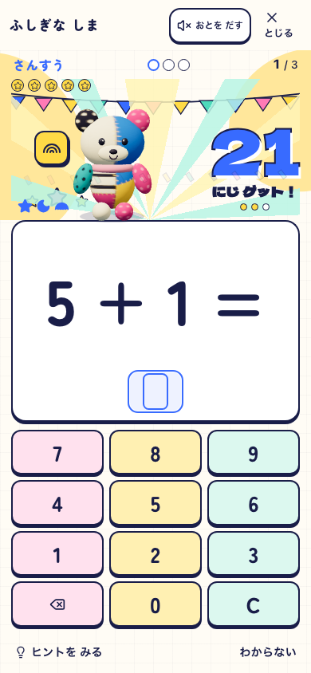
収集後も続けられる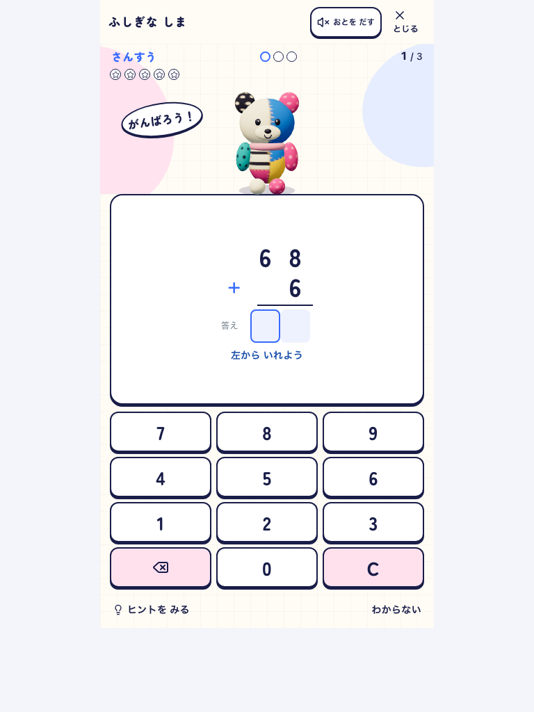
大画面でも広げすぎない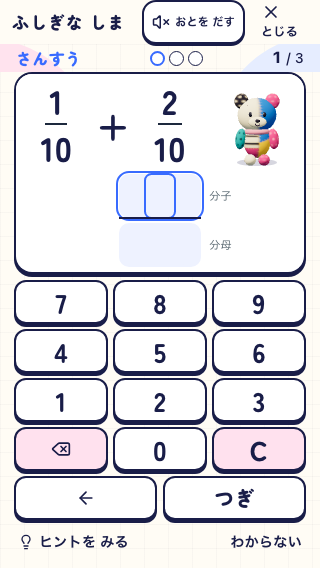
320 × 568でも全キー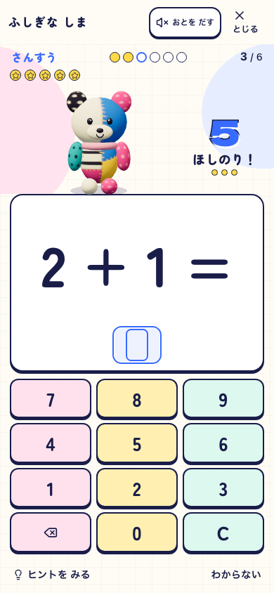
オフラインで続きへ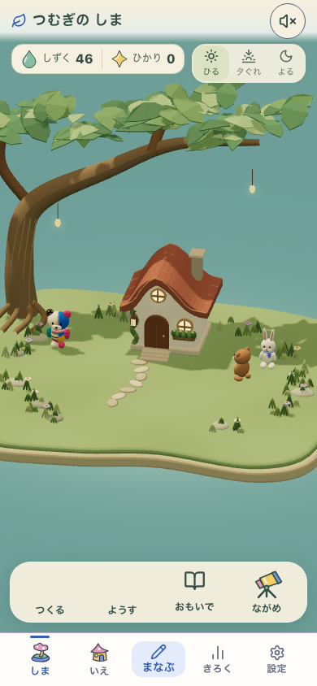
同じ島へ戻る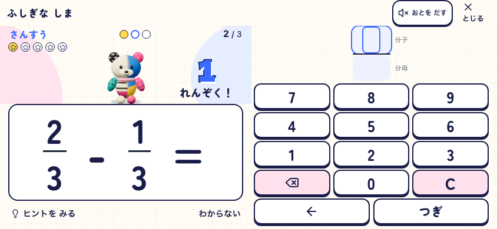
pokomoko-pop-live-v6 / production: 485dba3-pop-v6-verified / Island・Life・Fantasy ON。筆算・小画面の詳細は同じ最終ソースのDEV。独立した子どもの評価、実機スピーカーの聴感は未確認です。変更と検証の範囲